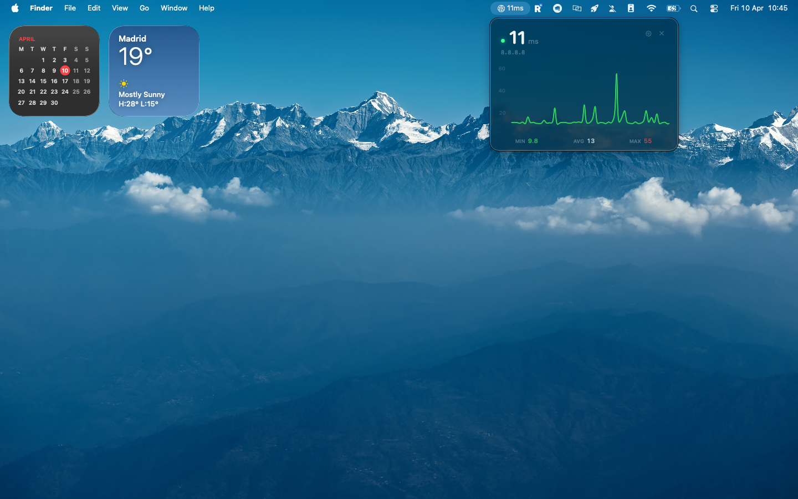
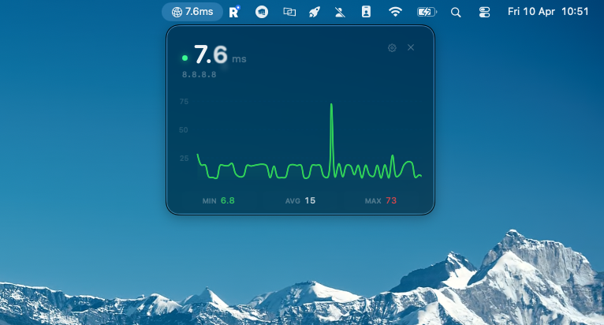
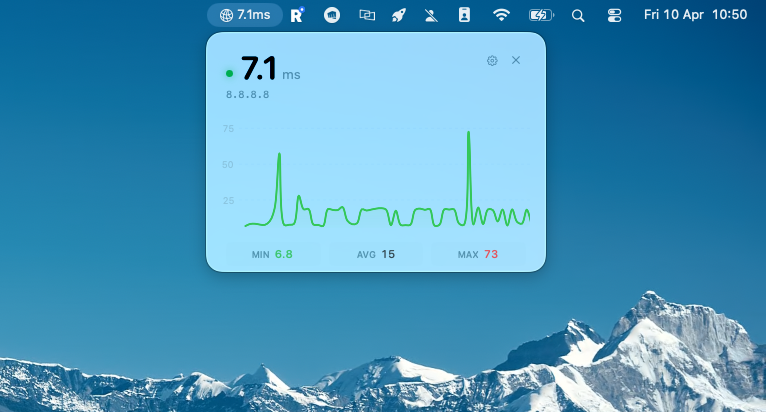

NoLag sits in your menu bar and monitors network latency in real time — live graph, min/avg/max stats, and instant spike detection, all at a glance.


Dark Mode

Light Mode
A tiny, powerful utility that stays out of your way.
A real-time chart of your last 60 pings, updated every second. Spot spikes and drops the moment they happen.
See your current ping right in the menu bar. Choose between icon only, ping only, or both — whatever fits your setup.
Add as many hosts as you need — game servers, DNS, your router. Switch between them with a click.
Instant summary of your connection quality. Know your baseline, your average, and your worst spikes at a glance.
Looks great in both macOS appearances. Adapts automatically to your system theme.
No accounts, no analytics, no data collection. NoLag runs entirely on your Mac and sends nothing to anyone.